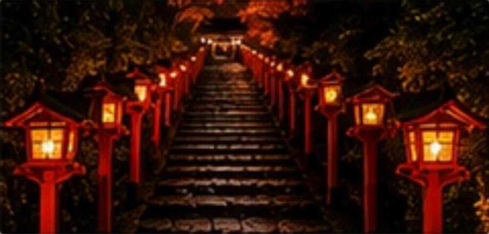

桃園國際機場 TPE T1 ↗・起飛
11/19，台灣時間 UTC+8。航班 MM028。
關西國際機場 KIX T2 ↗・抵達
11/19，日本時間 UTC+9（台灣時間 21:20）；預計飛行時間 2 小時 30 分。
關西機場日航飯店 ↗・入住
領取行李後，從 T2 搭往 T1 方向的免費接駁車，約 7–10 分鐘，在 Aeroplaza ↗ 下車；旁邊即為日航飯店 1 樓入口。
楓谷與東山夜色
 東福寺・通天橋楓谷
東福寺・通天橋楓谷東福寺 → 永觀堂 → 南禪寺
把最想看的楓谷留給平日。白天走訪寺院，晚餐後再看燈光下的永觀堂。
關西機場日航飯店 ↗・退房出發
退房後步行至關西機場站，步行與進站預留 10–15 分鐘。暫抓 HARUKA 8 號 08:41 出發、10:04 抵達京都；車次以出發日確認為準。10:15–10:35 至京阪京都站南飯店寄放行李。
岡崎周邊晚餐
在岡崎、南禪寺周邊提早晚餐與休息，選下午有營業的店家；餐後步行返回永觀堂。
永觀堂・夜楓
17:30 起排隊入場，實際入場時間依人潮。日夜分開購票、重新排隊；白天 17:00 閉門，夜間 17:30 開放。2026 夜楓期間為 11/20～12/6，20:30 停止受理、21:00 閉門。
清晨走進古都
 清水寺・秋楓
清水寺・秋楓清水寺 → 二三年坂 → 祇園 → 四条・寺町購物 → 高台寺
把東山最熱門的路段留給清晨。午後順逛四条、寺町，回飯店休息後再看高台寺夜景。
當天行程結束後返回飯店。
祇園午餐與散步
自由午餐、逛街，依孩子體力安排休息。
四条・寺町順路購物
由祇園沿四条通過鴨川，依序逛：
① BAPE STORE KYOTO ↗
② niko and… 京都寺町 ↗
③ LOFTMAN B.D.／RRL・FULLCOUNT 牛仔褲 ↗
④ BEAMS JAPAN 京都 ↗祇園四条站至 BAPE 步行估約 0.6–0.8 公里、10–15 分鐘；接著沿寺町通往北至 niko and… 約 300–400 公尺、5–8 分鐘；再到 LOFTMAN B.D. 約 50–100 公尺、1–3 分鐘。接著往西北至新風館 BEAMS JAPAN 京都，步行估約 1.1–1.3 公里、20–25 分鐘；位於新風館 1 樓，營業 11:00–20:00。此時段挑想逛的店，沒逛完留到 Day 4。
LOFTMAN B.D. 週末營業 11:00–20:00，可一起看 RRL 與 FULLCOUNT 牛仔褲；款式、尺寸與改褲服務現場確認。
回飯店休息
購物後從 BEAMS JAPAN 京都步行至烏丸御池站入口，估約 100–200 公尺、3–5 分鐘；搭地鐵烏丸線直達京都站。步行、候車與站內移動合計預留 25–35 分鐘，回飯店休息，約 16:30 再出發往高台寺。
坐看一庭秋色
 圓光寺・十牛之庭
圓光寺・十牛之庭圓光寺 → 詩仙堂 → 寺町 → 四条烏丸
上午賞庭園，下午逛 BEAMS、RRL、niko and…、BAPE 與 nanamica。購物時間依圓光寺預約與當日進度調整。
當天行程結束後返回飯店。
一乘寺午餐
午餐與休息，不趕回程。
寺町・四条烏丸購物
依順路順序逛，Day 3 已買好的店可跳過：
① LOFTMAN B.D.／RRL・FULLCOUNT 牛仔褲 ↗
② niko and… 京都寺町 ↗
③ BAPE STORE KYOTO ↗
④ nanamica KYOTO ↗
⑤ BEAMS JAPAN 京都 ↗LOFTMAN B.D. → niko and… 步行估約 50–100 公尺、1–3 分鐘；再往南至 BAPE 約 300–400 公尺、5–8 分鐘；沿四条通往西至 nanamica，約 0.8–1 公里、15–20 分鐘；再往北至新風館 BEAMS JAPAN 京都，約 0.6–0.8 公里、12–18 分鐘。
BEAMS JAPAN 京都位於新風館 1 樓，營業 11:00–20:00。時段內自由安排試穿與咖啡休息。nanamica 19:00 關店，建議優先留足試穿時間。
LOFTMAN B.D. 週末營業 11:00–20:00，可一起看 RRL 與 FULLCOUNT 牛仔褲；款式、尺寸與改褲服務現場確認。
新風館・烏丸御池周邊晚餐 ↗
晚餐後由烏丸御池站 ↗搭地鐵烏丸線至京都站 ↗，返回京阪京都站南飯店。BEAMS JAPAN 京都至車站入口步行估約 100–200 公尺、3–5 分鐘；京都站八条西口至飯店約 100–200 公尺、3–5 分鐘。
沿著燈籠上山

貴船夜楓・燈籠石階出町柳 → 叡山電車 → 貴船神社
上午留白，午後往洛北。神社燈籠與電車紅葉隧道是兩段不同的體驗。
當天行程結束後返回飯店。
貴船口 → 貴船神社
貴船口站 → 貴船神社本宮官方標示約 2 公里、步行約 30 分鐘；親子上坡建議預留 40–50 分鐘。夜間原路返回也需考慮照明與體力。
查看步行路線 ↗貴船口站 → 貴船神社（計程車方案）道路距離約 2 公里，暢通時估 5–10 分鐘；下車後到本宮仍有參道石階，約 100–200 公尺。務必事先確認去回程叫車，勿假設車站或神社隨時有車。
查看開車路線 ↗貴船神社參拜與散步
趁天亮熟悉回程路線，備妥保暖衣物。
貴船夜楓・紅葉隧道
神社點燈與電車紅葉隧道活動時間依官方公告。
帶著秋天回家
京都站 → 三宮 → 神戶機場 T2 → 桃園 T2
上午採買，下午前往神戶機場。19:00 起飛，21:15 抵達桃園；皆為當地時間。
早餐・最後採買
早餐後先退房、寄放行李，再前往京都站採買。JR 京都伊勢丹 10:00 開門，百貨營業時間 10:00–20:00；可從 10:00 開始逛 6 樓 LONE ONES。
銀飾購物｜LONE ONES ↗：JR 京都站大樓內，JR 京都伊勢丹 6 樓，可安排試戴與挑選。
伴手禮｜中村藤吉・JR 京都伊勢丹 B1 ↗：ビスカン 茶味鐵盒餅乾，參考價 ¥3,900／盒（含稅）；專櫃隨百貨營業 10:00–20:00，現貨以當日為準。逛完 6 樓再下樓選購；前幾天回京都站時也可先詢問。
京都站 → JR 京都伊勢丹百貨與車站相連；從中央口周邊入口約 100–300 公尺，預留 3–5 分鐘。樓層移動與購物時間另計。
查看步行路線 ↗京都站・搭 JR 新快速 ↗
建議 13:30 左右回飯店取行李，14:00 左右搭 JR 新快速往三之宮站；實際車次另確認。
三之宮站 → Port Liner 三宮站 ↗
依 Port Liner 指標轉乘，帶行李預留 10–15 分鐘；搭「神戶空港」方向列車，車程約 18 分鐘。
神戶機場站 → 第 2 航廈 ↗
出站後沿第 2 航廈指標步行，帶行李預留 15–20 分鐘。查看官方步行指引 ↗
神戶機場 T2・報到 ↗
建議抵達目標，預留報到、托運、出境與安檢時間。
UKB 神戶機場 T2・起飛 ↗
11/24，日本時間 UTC+9。
TPE 桃園機場 T2・抵達 ↗
11/24，台灣時間 UTC+8；預計飛行時間 3 小時 15 分。